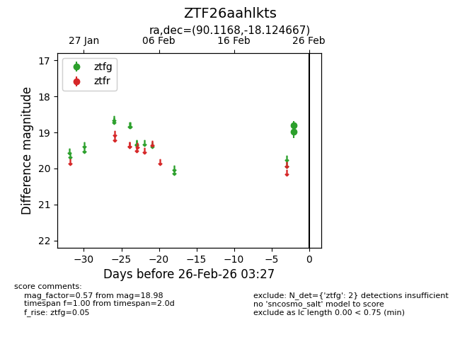
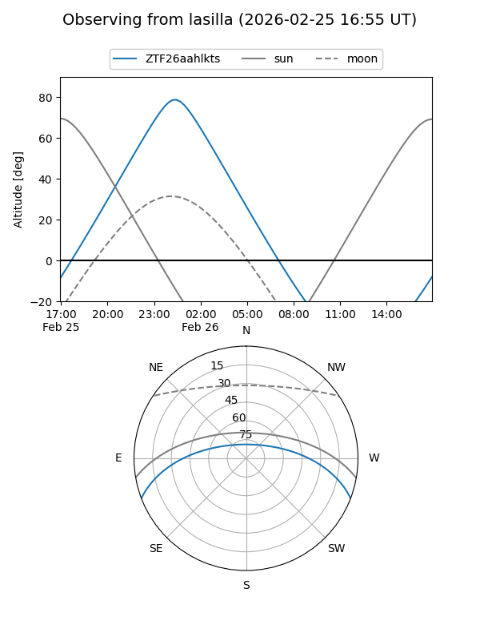
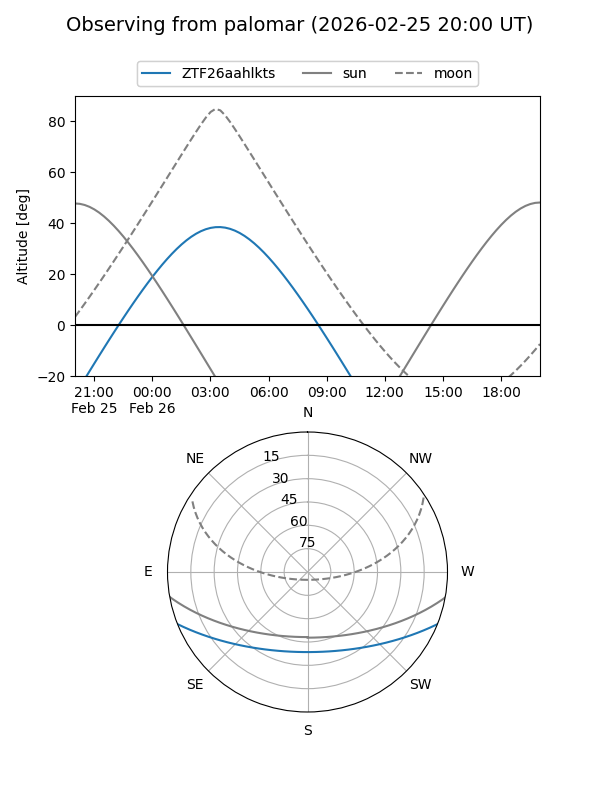

ZTF26aahlkts
Target ZTF26aahlkts at 2026-02-26 03:28
Aliases and brokers:
FINK: link
Lasair: link
ALeRCE: link
alt names
ZTF26aahlkts (ztf,fink_ztf)
Coordinates:
equatorial (ra, dec) = 90.1168,-18.12467
equatorial (HMS+DMS) = 06:00:28.03,-18:07:28.80
galactic (l, b) = (223.9968,-19.17272)
Flags:
Photometry:
last ztfg=18.98
2 ztfg detections
Lightcurve

Visibility


Additional plots